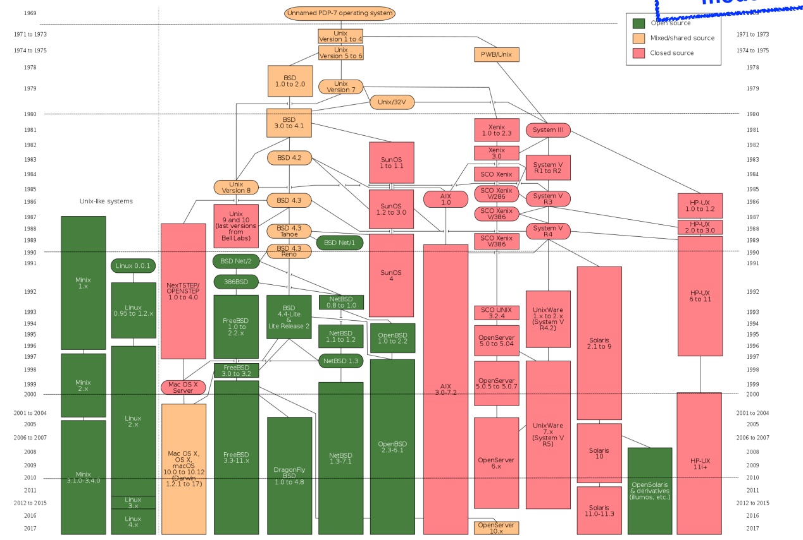
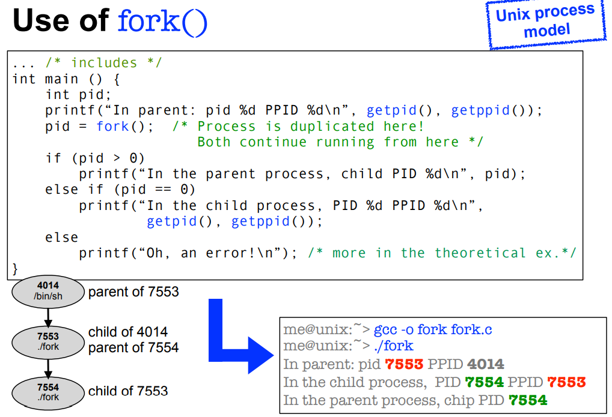
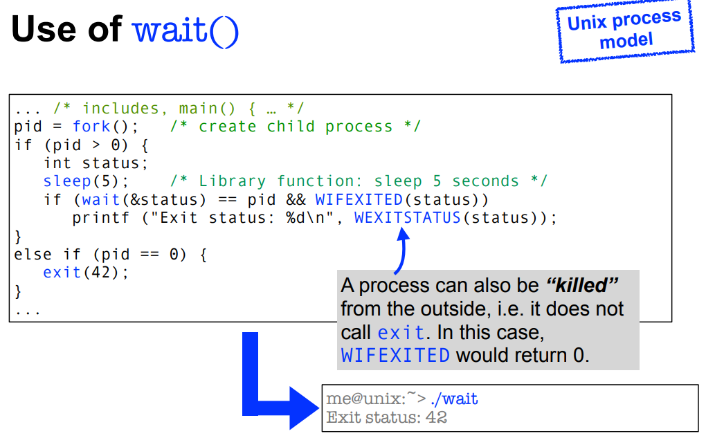
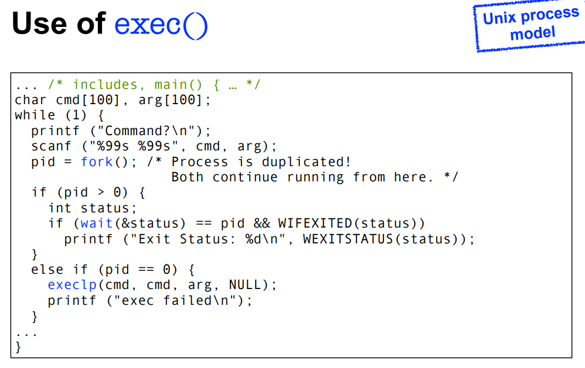
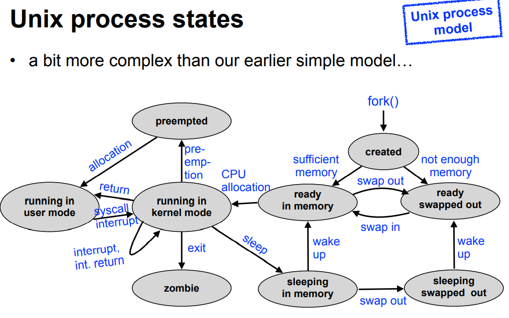

lecture.04
Lecture 4, part 1: Processes
Exam
Details about the process abstraction and its use in Unix
Important questions:
- What is the definition of a process and what is the difference to a program?
- What is a process hierarchy and why does it exist?
- Parent/child processes, orphans, zombies and PID 1 (init)
- How can processes perform I/O, how can it be (re)configured?
- Relation of the I/O concept to the Unix philosophy?
- How do processes interact with the OS: system calls
- How can processes be created/controlled/terminated?
- Which Unix syscalls are used for process management?
- Pros and cons of the Unix fork/exec model
- Optimizations for process creation in Unix: copy-on-write
- What are details of the extended process state model?
Review: processes..
- are "programs in execution"
- dynamic, not static
- alternating sequences of "CPU bursts" and "I/O bursts"
- require resources of the computer
- have a state
- READY, RUNNING, BLOCKED
- are conceptionally considered to be independent, concurrent control flows
- are under the control of the operating system
- resource allocation and revocation
Unix (Thompson and Ritche 1968)
- A system with a long (hi)story
- Origin: AT&T Bell Labs
- Developed as an alternative to "Multics"
- Version 1 created on a PDP 7
- written in assembler
- 8192 18 bit words of memory
- Version 3 implemented in C on a PDP11
- C was created to enable OS development in a high-level language
Unix variants

Unix processes
- Are the primary way to structure activities
- Application as well as system processes
- Can create new processes in a fast and easy way
- Parent process -> child process
- Form a process hierarchy
Unix shells
- A "shell" around the operating system "core"
- Text based user interface to start commands (Unix programs)
- Commands can be located anywhere on the file system
- Shell searches in directories given in the $PATH environment variable
- Shell prompt example:
me@unix:~>which vim - Every executed command is a separate child process
- Typically, the shell blocks (waits) until the last command has terminated
- It is possible to suspend, continue and terminate commands (job control) and to have commands executing in the background
Unix shells: job control
Standard I/O channels
- Usually connected to the terminal in which the shell runs that started the process
- Standard input (stdin): read user input (keyboard)
- Standard ouput (stdout): text output of the process (terminal window)
- Standard error (stderr): separate channel for error messages (usually also connected to the terminal)
- Almost all Unix commands also accept files as input or output channels (instead of the terminal)
- Shells provide a simple syntax to redirect the standard I/O channels
Redirecting standard I/O
redirects standard output<redirects standard input|(pipe) symbol tells the shell to connect the standard output of the left process to the standard input of the right process
The Unix philosophy
-
Doug Mcllroy, the inventor of Unix pipes, summarized the Unix philosophy as follows:
This is the Unix Philosophy: Write programs that do one thing and do it well. Write programs to work together. Write programs to handle text streams, because that is a universal interface.
This is commonly expressed in a shorter way: "Do one thing, do it well."
Lecture 4, part 2: Processes
Process-OS interaction in Unix (1)
- How does an application program request a service from the operating system?
- From the point of view of the application, calling an operating system service looks like a regular function call, e.g.:
pid = fork(); - However, arbitrarily calling code inside the OS kernel is dangerous:
- No checking of permission to execute a function
- No checking for correct parameters
- Security nightmare!
- The transition from code ecevuting in an application to code running in the kernel needs to be protected!
Process-OS interaction in Unix (2)
- Many CPUs provide several execution modes:
- "user mode": only restricted functionality is allowed
- "kernel" or "supervisor mode": full access to all hardware resources
- Special machine instructions are provided to transistion from user to kernel mode:
- int 0x80 (intel x86), syscall/sysenter (intel/AMD64)
- trap (Motorola 68k), SVC (ARM), ECALL (RISC-V)
- Executing such an instruction causes the CPU to change its current execution mode to kernel mode and jump to an address predetermined by the processor hardware: system call
Process-OS interaction in Unix (3)
- Applications can execute a syscall instruction directly, but
- This stops working when the syscall interface changes
- In most modern systems, the C library (libc) provides stubs (adapter functions) that call the actual syscall
- The stub function is a regular function linked to the application
Unix process control: syscalls
A first overview of process related system calls (syscalls)
| Syscall | Description | Manual section |
|---|---|---|
| getpid | returns PID of the calling process | (2) |
| getppid | returns PID of the parent process | (2) |
| getuid | return the UID of the calling process | (2) |
| fork | creates a new child process | (2) |
| exit | terminates the calling process | (3) |
| _exit | terminates the calling process | (2) |
| wait | waits for the termination of a child process | (2) |
| execve | loads and starts a program in the context of the calling process | (2) |
Read Unix manual pages with man <num> <command>
Unix processes in detail: fork()
System call: pid_t fork(void)
- Duplicates the calling process (the standard way to create new processes in Unix!)
- The child process inherits..
- Address space (code, data, bss, stack segments)
- User and group ID
- Standard I/O channels
- Process group, signal table
- Open files, current working directory
- Not copied are the following:
- Process ID (PID), parent process ID (PPID)
- Pending signals, accounting data, ..
- One process calls fork, but two processes return 🤔
Use of fork()

Discussion: fast process creation
- Copying the address space takes a lot of time
- Especially if the program immediately calls
exec..()afterwards -> complete waste of time!
- Especially if the program immediately calls
- Historice solution:
vfork- The parent process is suspended until the child process calls
exec..()or terminates using_exit() - The child simply uses code and data of its parent (without copying!)
- The child process must not change any data
- Sometimes not so simple: e.g., don't call
exit(), but_exit()!
- The parent process is suspended until the child process calls
- Modern solution: copy on write
- Parent and child process share the same code and data segments using the memory management unit (MMU)
- A segment is copied onlu if the child process changes any data
- This is not the case when
exec..()is called directly afterfork() fork()using copy on write is almost as fast asvfork()
Unix processes in detail: _exit()
System call: void wait(int)
- Terminates the calling process and passes an integer argument as "exit status" to the parent process
- Releases the resources allocated by the process
- Open files, used memory, ..
- Sends a signal SIGCHLD to its parent process
- There is also a library function
exitwhich additionally releases resources used by the C library- Among other things, the outputs (flushes) all data still stored in output buffers!
- Normal processes should use
exit, not_exit
Discussion: orphaned process
- A Unix process is orphaned when its parent process terminates
- What happens to our process hierarchy?
- The init process (always pid 1) adopts all orphaned processes.
Unix processes in detail: wait()
System call: pid_t wait(int *)
- Blocks the calling process until one of its child processes terminates
- The return value is the terminated child's PID
- Using the
int *parameter, the caller is passed the child's "exit status" (and more) waitreturns immediately if all child processes are already terminated
Use of wait()

Discussion: zombies
- A terminated process is called a "zombie" until its exit status is requested using
wait - The resources allocated to such processes can be released, but the OS project management still needs to know about them
- Especially the exit status has to be saved
- Zombies are annoted by
psby<defunct>
Unix processes in detail: execve()
System call: int execve(const char *command, const char *args[], const char *encp[])
- Loads and starts the command passed in the "command" parameter
- Only returns in case of an error
- e.g. command does not exits, no access, etc.
- Replaced the complete address space of the calling process
- but is remains the same process!
- Sam PID, PPID, open files, etc.
- The C library provides some comfortable support functions that internally call
execve:execl,execv,execlp,execvp, ..
Use of exec()

Discussion: why no forkexec()?
- The parent process has more control if we separate the calls to
forkandexecve:- Execute operations in the context of the child process
- Full access to the parent processes data
- Unix shells use this feature to e.g.
- redirect the standard I/O channels
- configure pipes
Unix process states

Conclusion
- Process management is an important part of any OS
- Unix has a process hierarchy
- The init process (PID 1) is the root of the hierarchy
- Special approach taken in Unix: separate process creation (
fork) and program execution (exec)!- Used by the Unix shell to implement I/O redirection
- Small set of basic system calls for process management
- Hardware support required to make
forkefficient
- Hardware support required to make
- Real-world process states are quite complex